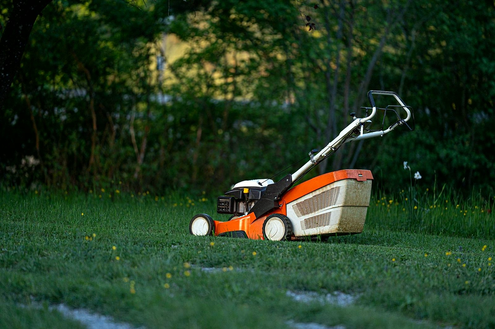

Otwarte od poniedziałku do sobotyKościuszki 59, Zelów
Wszystkodo ogrodu.W jednym sklepie.
Rośliny, nasiona, nawozy, narzędzia i sprzęt ogrodowy. Wpadnij na Kościuszki 59 w Zelowie albo zadzwoń wcześniej i zapytaj, czy mamy to, czego szukasz.
Co u nas znajdziesz
Od nasionpo sprzęt ogrodowy.
Po to przyjeżdża się do nas najczęściej. Pełna lista działów jest w asortymencie.
Cały asortyment


O sklepie
Najpierw pytamy,potem doradzamy.
TOMILI działa w Zelowie, przy Kościuszki 59. Przyjeżdżają do nas działkowicze, właściciele przydomowych ogródków i ci, którym wystarcza balkon.
Przy ladzie nie sprzedajemy na siłę. Najpierw pytamy, co chcesz zrobić, potem podpowiadamy, czego użyć i ile tego potrzeba.
Jak wyglądają zakupy
Bez zgadywania.Krok po kroku.
-
01 / 04
Dzwonisz albo wpadasz
Dzwonisz z pytaniem albo przyjeżdżasz na Kościuszki 59 w Zelowie. Od poniedziałku do soboty jesteśmy na miejscu.
-
02 / 04
Mówisz, czego potrzeba
Opowiadasz, co chcesz posadzić albo zrobić w ogrodzie. Pokazujemy, co mamy i co do tego pasuje.
-
03 / 04
Rada na drogę
Podpowiadamy, jak sadzić, nawozić i pielęgnować. Bez dodatków, których nie potrzebujesz.
-
04 / 04
Zabierasz od ręki
Płacisz i zabierasz towar od razu. Jak czegoś zabraknie, powiemy, kiedy będzie.
Galeria
Ogród w pełnisezonu.
Kwiaty, rośliny i sprzęt, czyli to, po co przyjeżdża się do sklepu ogrodniczego. Więcej kadrów w galerii.
Cała galeria


Asortyment
Wszystko, czego potrzebaw ogrodzie i na działce.
Szczegóły każdego działu są w asortymencie. Nie wiesz, czy coś jest na stanie? Sprawdzimy przez telefon.
Rośliny i sadzonki
Na rabatę, balkon i do ogrodu. Dobierzemy je pod Twoje stanowisko.
Nasiona
Warzywa, zioła, kwiaty i trawy na każdy kawałek ziemi.
Nawozy i podłoża
Ziemia i nawozy pod trawnik, warzywnik i kwiaty.
Ochrona roślin
Na szkodniki i choroby, z instrukcją przy ladzie.
Narzędzia ogrodowe
Sekatory, grabie, łopaty i konewki, do wzięcia do ręki przed zakupem.
Sprzęt do ogrodu
Do koszenia, przycinania i porządków na działce.
Opinie
Co pisząklienci.
Pierwsza moja wizyta u tego Pana i powiem, że mi się podobało. Fachowa pomoc, normalne ceny. Polecam.
Gdzie nas znaleźć
Kościuszki 59,w Zelowie.
Sklep jest przy ulicy Tadeusza Kościuszki 59. Szukasz czegoś konkretnego? Daj znać przed przyjazdem, a sprawdzimy, czy jest na miejscu.
- Pn-pt 9:00-17:00
- Sobota 9:00-13:00
- niedziela nieczynne
Częste pytania
Dobrzewiedzieć.
Nie ma tu Twojego pytania? Odpowiemy przez telefon od ręki.
Mogę zadzwonić i zapytać, czy coś jest na stanie?
Tak. Daj znać przed przyjazdem, a sprawdzimy, czy mamy to, czego szukasz. Oszczędzisz sobie drogi.
W jakich godzinach jest otwarte?
Od poniedziałku do piątku od 9:00 do 17:00, w soboty od 9:00 do 13:00. W niedzielę sklep jest nieczynny.
Doradzicie, co posadzić?
Tak. Powiedz, gdzie roślina ma rosnąć: w słońcu czy w cieniu, w gruncie czy w donicy. Podpowiemy, co się przyjmie i jak o to dbać.
Jak stosować środki ochrony roślin?
Przy ladzie wyjaśnimy, jak użyć konkretnego środka i kiedy. Na miejscu zawsze trzymaj się etykiety na opakowaniu.
Co, jeśli czegoś akurat nie ma?
Powiemy wprost i podpowiemy, kiedy będzie. Nie wciskamy zamiennika, który się nie sprawdzi.
Kontakt
Szukasz czegoś do ogrodu?Zadzwoń przed przyjazdem.
Powiedz, czego szukasz, a sprawdzimy, czy jest na miejscu. Od poniedziałku do soboty.
+48 531 642 254